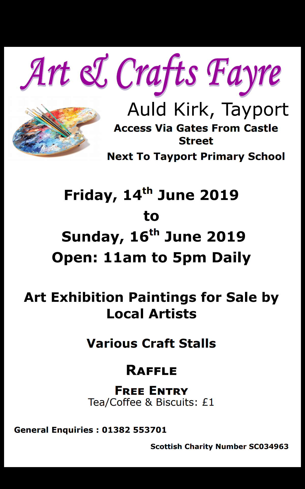
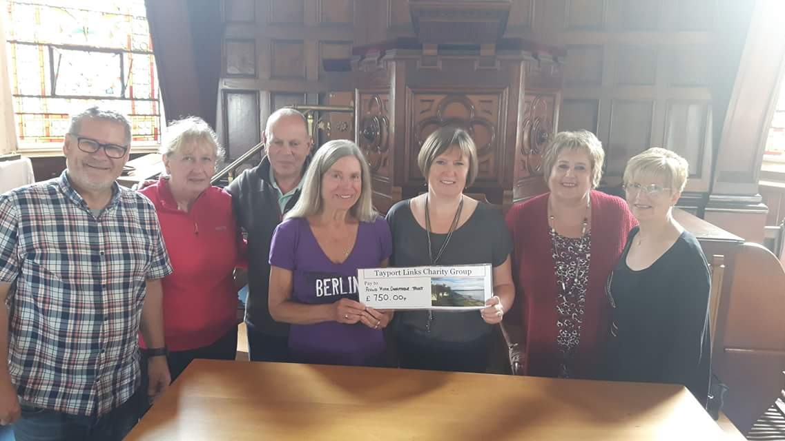

About | History | Town Significance | Organisation | Archeology | How You Can Help | Resources | Gallery | Past Events
Tayport Auld Kirk, with its distinctive leaning clock tower, is one of the best known landmarks in the area. It has been recognised by Historic Scotland as a "B" listed building, together with its unique graveyard. The Auld Kirk Charitable Trust, was constituted as a charity in 2003 in order to bring the building into new uses, in a sustainable plan for the future. The Auld Kirk will be a centre for cultural, social, heritage and educational purposes.

2019 Arts & Craft Fayre Artists Forms
A Glimpse into Tayport's past: Part 2
Compiled and presented by George Gall
Friday 1st February 2019 in Tayport Parish Church at 7.00 pm
Ticket price £5. Tickets can be purchased in advance from Wallace Hughes, Castle Street, Tayport.
All proceeds will go towards the restoration of the Auld Kirk building and its developments as a heritage and arts centre.
The Auld Kirk Carol Concert will take place on Monday 10th December at 7.00 pm with Tayport Instrumental Band, Tayport Primary School Choir, A Choir'd Taste, Tayport Parish Church Choir, Ferryport Fiddlers and the traditional participatory singing of "The Twelve Days of Christmas". Tickets cost £3.00 and are on sale at Wallace Hughes, Castle Street, Tayport.
On Armistice Day, Sunday 11th November, the Auld Kirk will be open from 2.00 - 4.00 pm with a display of photographs, maps and film footage of Tayport in bygone days, including maps dating from the First World War and information about local residents who served in that war. All are welcome and entry is free of charge.
On Thursday 20th September at 7.00 pm the Auld Kirk Charitable Trust will hold its AGM in the Auld Kirk. Everyone is welcome to attend and we are looking for volunteers who can help in any way to achieve the development of this historic building into a Heritage and Arts Centre for Tayport.
Auld Kirk AGM Notice (doc) (PDF)
On Sunday 2nd September the Auld Kirk will be open for Fife Council's "Doors Open Day" from 10.00-16.00. There will be displays of old Tayport maps, photos and videos, with a particular focus this year on the First World War as we mark the centenary of its conclusion.
June 2018: Art & Crafts Fayre
Prize-winners of the art competition for Tayport Primary School pupils being presented with their trophies by Dundee artist John Davie, who selected the winning paintings. (additional photos are on the Gallery page)
11th December 2017: Carol Concert

On Doors Open Day on Sunday 3rd September 2017 the Auld Kirk Charitable Trust was presented by Lynda White with a cheque for £750.00 from Tayport Links Caravan Park Owners and Charity Group towards the on-going restoration and development of the Auld Kirk. We are very grateful for this generous donation, which will be used towards vital improvements to the building.